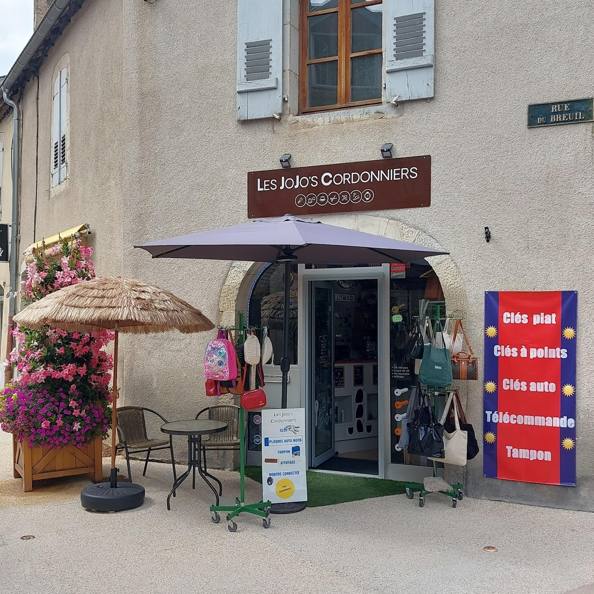
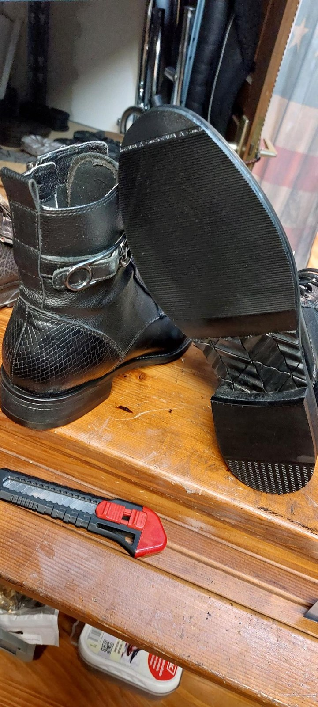
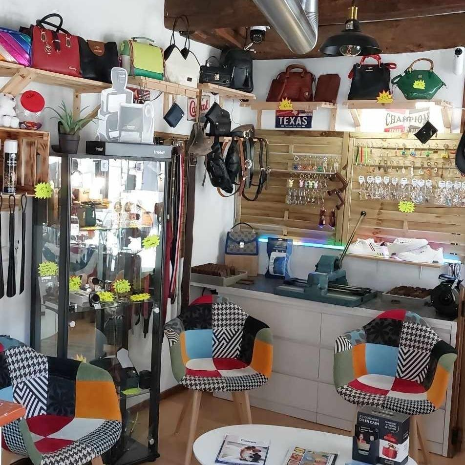

Cordonnerie
- Réparation des talons et des semelles
- Reprise des coutures
- Entretien et rénovation du cuir
- Réparations complexes après examen
Prix et délai selon l’état de la paire et le travail à réaliser.
Réparation de chaussures et reproduction de clés.
Retrouvez Stéphane au 39 rue du Breuil, à Vesoul.
Clés plates et à micropoints : immédiat sous réserve de stock. Sur devis sinon.

Stéphane répare et rénove vos chaussures, des talons aux semelles, en passant par les coutures et le cuir. Apportez votre paire pour évaluer le travail à réaliser.
Les réparations
Clés plates et à micropoints : reproduction immédiate sous réserve de stock. Sur devis sinon.
Badges de portail et de porte de garage : reproduction selon le système. Apportez votre modèle.
Les prestations
Prix et délai selon l’état de la paire et le travail à réaliser.
Apportez l’original et, pour une clé protégée, votre carte de propriété si vous en disposez.
Les clés plates et à micropoints sont reproduites immédiatement, sous réserve de stock. Sur devis sinon.
Présentez votre modèle en boutique pour vérifier les possibilités, la compatibilité et le devis.
Stéphane prend en charge les réparations complexes. Apportez la paire complète : la faisabilité, le prix et le délai dépendent de son état et de sa construction.
Stéphane Joriot vous accueille
au 39 rue du Breuil, à Vesoul.
Mardi — vendredi7 h 30 — 18 h
Samedi7 h 30 — 16 h
Dimanche et lundiFermé
Hors jours fériés et fermetures exceptionnelles.